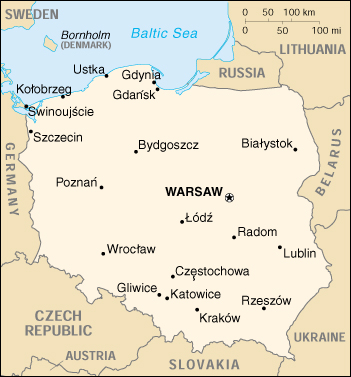

{kind=link}


| Poland |
|
|  | |
| Introduction |
Background: Poland gained its independence in 1918 only to be overrun by Germany and the Soviet Union in World War II. It became a Soviet satellite country following the war, but one that was comparatively tolerant and progressive. Labor turmoil in 1980 led to the formation of an independent trade union "Solidarity" that over time became a political force and by 1990 had swept parliamentary elections and the presidency. Complete freedom came with the implosion of the USSR in 1991. A "shock therapy" program during the early 1990s enabled the country to transform its economy into one of the most robust in Central Europe, boosting hopes for early acceptance to the EU. Poland joined the NATO alliance in 1999.
| Geography |
Location: Central Europe, east of Germany
Geographic coordinates: 52 00 N, 20 00 E
Map references: Europe
Area:
total:
312,685 sq km
land:
304,465 sq km
water:
8,220 sq km
Area - comparative: slightly smaller than New Mexico
Land boundaries:
total:
2,888 km
border countries:
Belarus 605 km, Czech Republic 658 km, Germany 456 km, Lithuania 91 km, Russia (Kaliningrad Oblast) 206 km, Slovakia 444 km, Ukraine 428 km
Coastline: 491 km
Maritime claims:
exclusive economic zone:
defined by international treaties
territorial sea:
12 nm
Climate: temperate with cold, cloudy, moderately severe winters with frequent precipitation; mild summers with frequent showers and thundershowers
Terrain: mostly flat plain; mountains along southern border
Elevation extremes:
lowest point:
Raczki Elblaskie -2 m
highest point:
Rysy 2,499 m
Natural resources: coal, sulfur, copper, natural gas, silver, lead, salt, arable land
Land use:
arable land:
47%
permanent crops:
1%
permanent pastures:
13%
forests and woodland:
29%
other:
10% (1993 est.)
Irrigated land: 1,000 sq km (1993 est.)
Natural hazards: NA
Environment - current issues: situation has improved since 1989 due to decline in heavy industry and increased environmental concern by postcommunist governments; air pollution nonetheless remains serious because of sulfur dioxide emissions from coal-fired power plants, and the resulting acid rain has caused forest damage; water pollution from industrial and municipal sources is also a problem, as is disposal of hazardous wastes
Environment - international agreements:
party to:
Air Pollution, Antarctic-Environmental Protocol, Antarctic Treaty, Biodiversity, Climate Change, Endangered Species, Environmental Modification, Hazardous Wastes, Law of the Sea, Marine Dumping, Nuclear Test Ban, Ozone Layer Protection, Ship Pollution, Wetlands
signed, but not ratified:
Air Pollution-Nitrogen Oxides, Air Pollution-Persistent Organic Pollutants, Air Pollution-Sulphur 94, Climate Change-Kyoto Protocol
Geography - note: historically, an area of conflict because of flat terrain and the lack of natural barriers on the North European Plain
| People |
Population: 38,646,023 (July 2000 est.)
Age structure:
0-14 years:
19% (male 3,767,454; female 3,587,822)
15-64 years:
69% (male 13,201,825; female 13,352,950)
65 years and over:
12% (male 1,809,839; female 2,926,133) (2000 est.)
Population growth rate: -0.04% (2000 est.)
Birth rate: 10.13 births/1,000 population (2000 est.)
Death rate: 9.99 deaths/1,000 population (2000 est.)
Net migration rate: -0.49 migrant(s)/1,000 population (2000 est.)
Sex ratio:
at birth:
1.06 male(s)/female
under 15 years:
1.05 male(s)/female
15-64 years:
0.99 male(s)/female
65 years and over:
0.62 male(s)/female
total population:
0.95 male(s)/female (2000 est.)
Infant mortality rate: 9.61 deaths/1,000 live births (2000 est.)
Life expectancy at birth:
total population:
73.19 years
male:
69.01 years
female:
77.6 years (2000 est.)
Total fertility rate: 1.38 children born/woman (2000 est.)
Nationality:
noun:
Pole(s)
adjective:
Polish
Ethnic groups: Polish 97.6%, German 1.3%, Ukrainian 0.6%, Byelorussian 0.5% (1990 est.)
Religions: Roman Catholic 95% (about 75% practicing), Eastern Orthodox, Protestant, and other 5%
Languages: Polish
Literacy:
definition:
age 15 and over can read and write
total population:
99%
male:
99%
female:
98% (1978 est.)
| Government |
Country name:
conventional long form:
Republic of Poland
conventional short form:
Poland
local long form:
Rzeczpospolita Polska
local short form:
Polska
Data code: PL
Government type: republic
Capital: Warsaw
Administrative divisions: 16 provinces (wojewodztwa, singular - wojewodztwo); Dolnoslaskie, Kujawsko-Pomorskie, Lodzkie, Lubelskie, Lubuskie, Malopolskie, Mazowieckie, Opolskie, Podkarpackie, Podlaskie, Pomorskie, Slaskie, Swietokrzyskie, Warminsko-Mazurskie, Wielkopolskie, Zachodniopomorskie
Independence: 11 November 1918 (independent republic proclaimed)
National holiday: Constitution Day, 3 May (1791); Independence Day, November 11 (1918)
Constitution: 16 October 1997; adopted by the National Assembly on 2 April 1997; passed by national referendum 23 May 1997
Legal system: mixture of Continental (Napoleonic) civil law and holdover communist legal theory; changes being gradually introduced as part of broader democratization process; limited judicial review of legislative acts although under the new constitution, the Constitutional Tribunal ruling will become final as of October 1999; court decisions can be appealed to the European Court of Justice in Strasbourg
Suffrage: 18 years of age; universal
Executive branch:
chief of state:
President Aleksander KWASNIEWSKI (since 23 December 1995)
head of government:
Prime Minister Jerzy BUZEK (since 31 October 1997), Deputy Prime Ministers Leszek BALCEROWICZ (since 31 October 1997), Longin KOMOLOWSKI (since 19 October 1999)
cabinet:
Council of Ministers responsible to the prime minister and the Sejm; the prime minister proposes, the president appoints, and the Sejm approves the Council of Ministers
elections:
president elected by popular vote for a five-year term; election first round held 5 November 1995, second round held 19 November 1995 (next to be held NA November 2000); prime minister and deputy prime ministers appointed by the president and confirmed by the Sejm
election results:
Aleksander KWASNIEWSKI elected president; percent of popular vote, second round - Aleksander KWASNIEWSKI 51.7%, Lech WALESA 48.3%
Legislative branch:
bicameral National Assembly or Zgromadzenie Narodowe consists of the Sejm (460 seats; members are elected under a complex system of proportional representation to serve four-year terms) and the Senate or Senat (100 seats; members are elected by a majority vote on a provincial basis to serve four-year terms)
elections:
Sejm elections last held 21 September 1997 (next to be held by NA September 2001); Senate - last held 21 September 1997 (next to be held by NA September 2001)
election results:
Sejm - percent of vote by party - RS-AWS 33.8%, SLD 27.1%, UW 13.4%, PSL 7.3%, ROP 5.6%, MNSO 0.4%, other 12.4%; seats by party - AWS 201, SLD 164, UW 60, PSL 27, ROP 6, MNSO 2; Senate - percent of vote by party - NA; seats by party - AWS 51, SLD 28, UW 8, ROP 5, PSL 3, independents 5; note - seats by party in the Sejm as of January 2000: AWS 186, SLD 159, UW 60, PSL 26, PP 7, ROP 4, MNSO 2, KPN-O 5, PPS-RLP 3, other 8
note:
two seats are assigned to ethnic minority parties
Judicial branch: Supreme Court, judges are appointed by the president on the recommendation of the National Council of the Judiciary for an indefinite period; Constitutional Tribunal, judges are chosen by the Sejm for nine-year terms
Political parties and leaders:
Center Alliance Party or PC [Antoni TOKARCZUK]; Christian National Union or ZCHN [Marian PILKA]; Confederation for an Independent Poland or KPN [Leszek MOCZULSKI]; Confederation for an Independent Poland-Patriotic Camp or KPN-OP (KPN-Fatherland or KPN-O is a small group within the KPN-OP) [Adam SLOMKA]; Conservative Peasant Party or SKL [Miroslaw STYCZEN]; Democratic Left Alliance or SLD (Social Democracy of Poland) [Leszek MILLER]; Freedom Union or UW [Leszek BALCEROWICZ]; German Minority of Lower Silesia or MNSO [Henryk KROLL]; Labor Party or PP [leader NA]; Labor Union or UP [Marek POL]; Movement of Polish Working People or RLP [leader NA]; Movement for the Reconstruction of Poland or ROP [Jan OLSZEWSKI]; Polish Christian Democrats or PPChD [Antoni TOKARCZUK]; Polish Peasant Party or PSL [Jaroslaw KALINOWSKI]; Polish Socialist Party or PPS [Piotr IKONOWICZ]; Realpolitik Union or UPR [Janusz KORWIN-MIKKE]; Solidarity Electoral Action or AWS (includes RS-AWS and Solidarity) [Marek KOTLARSKI]; Social Movement-Solidarity Electoral Action or RS-AWS [Jerzy BUZEK]
note:
post-Communist - SLD and PSL; post-Solidarity - UW, Freedom Union, ZCHN, PC, PL, RS AWS, UP, and PK; non-Communist, non-Solidarity - ROP, KPN, MN, and UPR
Political pressure groups and leaders: All Poland Trade Union Alliance or OPZZ (trade union); Roman Catholic Church; Solidarity (trade union)
International organization participation: Australia Group, BIS, BSEC (observer), CBSS, CCC, CE, CEI, CERN, EAPC, EBRD, ECE, EU (applicant), FAO, IAEA, IBRD, ICAO, ICFTU, ICRM, IDA, IEA (observer), IFC, IFRCS, IHO, ILO, IMF, IMO, Inmarsat, Intelsat, Interpol, IOC, IOM, ISO, ITU, MINURSO, MONUC, NAM (guest), NATO, NSG, OAS (observer), OECD, OPCW, OSCE, PCA, PFP, UN, UNCTAD, UNDOF, UNESCO, UNHCR, UNIDO, UNIFIL, UNIKOM, UNMIBH, UNMIK, UNMOP, UNMOT, UNOMIG, UPU, WCL, WEU (associate), WFTU, WHO, WIPO, WMO, WToO, WTrO, ZC
Diplomatic representation in the US:
chief of mission:
Ambassador Jerzy KOZMINSKI
chancery:
2640 16th Street NW, Washington, DC 20009
telephone:
[1] (202) 234-3800 through 3802
FAX:
[1] (202) 328-6271
consulate(s) general:
Chicago, Los Angeles, and New York
Diplomatic representation from the US:
chief of mission:
Ambassador Daniel FRIED
embassy:
Aleje Ujazdowskie 29/31 00-054, Warsaw P1
mailing address:
American Embassy Warsaw, US Department of State, Washington, DC 20521-5010 (pouch)
telephone:
[48] (22) 628-30-41
FAX:
[48] (22) 625-67-31
consulate(s) general:
Krakow
Flag description: two equal horizontal bands of white (top) and red; similar to the flags of Indonesia and Monaco which are red (top) and white
| Economy |
Economy - overview: Poland today stands out as one of the most successful and open transition economies. The privatization of small and medium state-owned companies and a liberal law on establishing new firms marked the rapid development of a private sector now responsible for 70% of economic activity. In contrast to the vibrant expansion of private non-farm activity, the large agriculture component remains handicapped by structural problems, surplus labor, inefficient small farms, and lack of investment. The government's determination to enter the EU as soon as possible affects most aspects of its economic policies. Improving Poland's worsening current account deficit and tightening monetary policy, now focused on inflation targeting, also are priorities. Warsaw continues to hold the budget deficit to around 2% of GDP. Structural reforms advanced in pensions, health care, and public administration in 1999, but resulted in larger than anticipated fiscal pressures. Further progress on public finance depends mainly on privatization of Poland's remaining state sector. Restructuring and privatization of "sensitive sectors" (e.g., coal and steel) has begun, but work remains to be done. Growth in 2000 should be moderately above 1999.
GDP: purchasing power parity - $276.5 billion (1999 est.)
GDP - real growth rate: 3.8% (1999 est.)
GDP - per capita: purchasing power parity - $7,200 (1999 est.)
GDP - composition by sector:
agriculture:
5%
industry:
35%
services:
60% (1998)
Population below poverty line: 23.8% (1993 est.)
Household income or consumption by percentage share:
lowest 10%:
4%
highest 10%:
22.1% (1992)
Inflation rate (consumer prices): 8.4% (1999 est.)
Labor force: 15.3 million (1998 est.)
Labor force - by occupation: industry 25%, agriculture 25%, services 50% (1999 est.)
Unemployment rate: 11% (1999 est.)
Budget:
revenues:
$31.6 billion
expenditures:
$34.8 billion, including capital expenditures of $NA (1999 est.)
Industries: machine building, iron and steel, coal mining, chemicals, shipbuilding, food processing, glass, beverages, textiles
Industrial production growth rate: 4.5% (1999 est.)
Electricity - production: 134.879 billion kWh (1998)
Electricity - production by source:
fossil fuel:
96.47%
hydro:
3.18%
nuclear:
0%
other:
0.35% (1998)
Electricity - consumption: 121.938 billion kWh (1998)
Electricity - exports: 8.1 billion kWh (1998)
Electricity - imports: 4.6 billion kWh (1998)
Agriculture - products: potatoes, fruits, vegetables, wheat; poultry, eggs, pork, beef, milk, cheese
Exports: $27.8 billion (f.o.b., 1999)
Exports - commodities: manufactured goods and chemicals 57%, machinery and equipment 21%, food and live animals 12%, mineral fuels 7% (1997)
Exports - partners: Germany 36%, Italy 5.8%, Russia 5.6%, Netherlands 4.7%, France 4.6%, Ukraine 3.8%, UK 3.8 (1998)
Imports: $40.8 billion (f.o.b., 1999)
Imports - commodities: manufactured goods and chemicals 43%, machinery and equipment 36%, mineral fuels 9%, food and live animals 8% (1997)
Imports - partners: Germany 25.8%, Italy 9.4%, France 6.5%, Russia 5.1%, UK 4.9%, US 3.8%, Netherlands 3.8% (1998)
Debt - external: $44 billion (1998)
Economic aid - recipient: $4.312 billion (1995)
Currency: 1 zloty (Zl) = 100 groszy
Exchange rates: zlotych (Zl) per US$1 - 4.1696 (December 1999), 3.9671 (1999), 3.4754 (1998), 3.2793 (1997), 2.6961 (1996), 2.4250 (1995)
Fiscal year: calendar year
| Communications |
Telephones - main lines in use: 8.07 million (1998)
Telephones - mobile cellular: 1.58 million (1998)
Telephone system:
underdeveloped and outmoded system; government aims to have 10 million telephones in service by 2000; the process of partial privatization of the state-owned telephone monopoly has begun
domestic:
cable, open wire, and microwave radio relay; 3 cellular networks; local exchanges 56.6% digital
international:
satellite earth stations - 2 Intelsat, NA Eutelsat, 2 Inmarsat (Atlantic and Indian Ocean regions), and 1 Intersputnik (Atlantic Ocean region)
Radio broadcast stations: AM 14, FM 777, shortwave 1 (1998)
Radios: 20.2 million (1997)
Television broadcast stations: 150 (1997)
Televisions: 13.05 million (1997)
Internet Service Providers (ISPs): 161 (1999)
| Transportation |
Railways:
total:
23,420 km
broad gauge:
646 km 1.524-m gauge
standard gauge:
21,639 km 1.435-m gauge (11,626 km electrified; 8,978 km double track)
narrow gauge:
1,135 km various gauges including 1.000-m, 0.785-m, 0.750-m, and 0.600-m (1998)
Highways:
total:
381,046 km
paved:
249,966 km (including 268 km of expressways)
unpaved:
131,080 km (1998 est.)
Waterways: 3,812 km navigable rivers and canals (1996)
Pipelines: crude oil and petroleum products 2,280 km; natural gas 17,000 km (1996)
Ports and harbors: Gdansk, Gdynia, Gliwice, Kolobrzeg, Szczecin, Swinoujscie, Ustka, Warsaw, Wroclaw
Merchant marine:
total:
57 ships (1,000 GRT or over) totaling 1,120,165 GRT/1,799,569 DWT
ships by type:
bulk 50, cargo 2, chemical tanker 2, roll-on/roll-off 1, short-sea passenger 2 (1999 est.)
Airports: 123 (1999 est.)
Airports - with paved runways:
total:
85
over 3,047 m:
3
2,438 to 3,047 m:
30
1,524 to 2,437 m:
42
914 to 1,523 m:
7
under 914 m:
3 (1999 est.)
Airports - with unpaved runways:
total:
38
2,438 to 3,047 m:
1
1,524 to 2,437 m:
4
914 to 1,523 m:
13
under 914 m:
20 (1999 est.)
Heliports: 3 (1999 est.)
| Military |
Military branches: Army, Navy, Air and Air Defense Force
Military manpower - military age: 19 years of age
Military manpower - availability:
males age 15-49:
10,454,717 (2000 est.)
Military manpower - fit for military service:
males age 15-49:
8,138,723 (2000 est.)
Military manpower - reaching military age annually:
males:
336,293 (2000 est.)
Military expenditures - dollar figure: $3.2 billion (FY00)
Military expenditures - percent of GDP: 2.1% (FY00)
| Transnational Issues |
Disputes - international: none
Illicit drugs: major illicit producer of amphetamines for the international market; minor transshipment point for Asian and Latin American illicit drugs to Western Europe